슬픈 표정
러브 라이브! 하스노소라 여학원 스쿨 아이돌 클럽의 등장인물. 하스노소라 여학원 스쿨 아이돌 클럽의 104기생 멤버.
스쿨 아이돌 클럽의 전신인 예악부에서 활동했던 할머니와의 인연으로 처음 스쿨 아이돌 클럽에 대하여 알게 되었으며, 이후 스리즈 부케와의 만남으로 클럽에 합류하게 된다.
| 자기 소개 영상 내용 일람 | |
|---|---|
| 자기 소개 영상 #1 (24.04.13 업로드) |
하스노소라 여학원의 1학년. 본가는 카가 자수 공방을 운영하고 있으며, 전통을 사랑하는 여자아이. 할머니가 클럽의 전신인 「예악부」에 소속되었기 때문에, 그 전통을 이어받은 스쿨 아이돌이 되는 것을 꿈꾸고 있다. 카호에 대해 솔직해지지 못하는 일면도? |
| 자기 소개 영상 #2 (25.04.10 업로드) |
하스노소라 여학원의 2학년. 본가는 카가 자수 공방을 운영하고 있으며, 전통을 사랑하는 여자아이. 할머니와 클럽의 전신인 「예악부」의 전통을 이어받아 새로운 전통을 만드는 스쿨 아이돌이 되기 위해 매일 노력하고 있다. 카호에게 솔직하지 못한 일면이 있었는데...? |
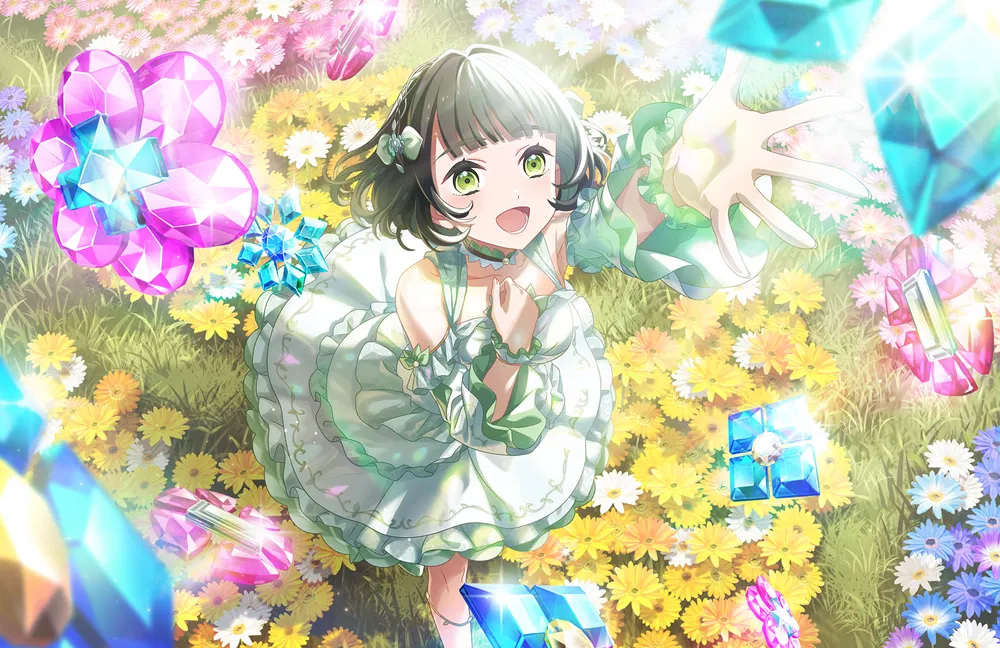
이미지 없음흑발의 단발머리에 일자로 자른 앞머리를 살짝 왼쪽으로 넘긴 머리를 하고 있다. 왼쪽 옆머리에는 빨간색 매듭 머리장식을 달고 있다.
눈썹이 다른 캐릭터들에 비해 두껍고 같은 유닛의 선배들처럼 글래머한 체형이다. 키도 162cm로 일본 여성 기준으로 큰 편이다.
전반적으로 하스노소라 멤버들 중 가장 전통적인 일본인스러운 분위기를 낸다. 머리카락이 짧기 때문인지 헤어 어레인지는 주로 묶는 머리 대신 곱슬거리게 만 쪽으로 받는데, 이러면 평소의 전통스러운 분위기는 거의 안 난다는 것도 특기할만 하다.
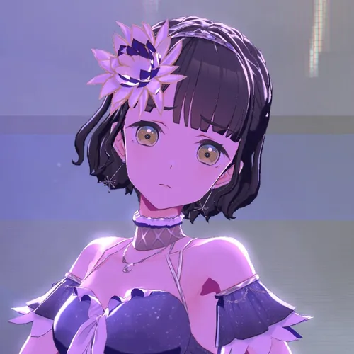
이미지 없음
3D 모델링의 경우 슬픈 표정의 퀄리티가 대단하다는 평가를 받는다.
(상세 내용 준비 중)
"어이, 긴코 밥은 먹었냐?"
— 백생면 주민들이 매일 아침 긴코 등신대에게 건네는 인사
전형적인 평야 농촌 지역인 치원군 백생면(百生面). 면 이름인 '백생(百生)'이 모모세 긴코의 성씨와 한자가 100% 일치할 뿐만 아니라, 관할 법정리 7개 중 하나인 '음자(吟子)리'는 이름과 완벽하게 겹친다. 이 기막힌 우연 때문에 하스노소라 팬들 사이에서는 "치원군 백생면에 모모세 긴코가 실존한다"는 괴담(?)이 돌고 있다.
실제로 성지순례를 온 팬들이 음자리 표지판 앞에서 절을 올리거나, 면사무소에 "긴코는 몇 번지에 사나요?"라고 문의 전화를 거는 등 군청 직원들의 멘탈을 터트리는 진풍경이 벌어지기도 했다.
처음에는 마을 어르신들이 "우리 동네 이름이 왜 '긴코'냐"며 경찰에 신고하려 했으나, 지금은 마을회관 앞에 떡하니 설치된 모모세 긴코 등신대를 보며 "어이, 긴코 밥은 먹었냐?"라며 안부를 묻는 기묘한 지역 풍경이 정착되었다.
이후 백민우 군수가 이 현상을 극도로 혐오하며 등신대 철거를 시도했으나, 마을 주민들이 낫과 호미를 들고 단체로 막아서며(?) 주민들 스스로가 '긴코의 보디가드'를 자처하는 훈훈한(혹은 흉흉한) 이야기가 전해진다.
| 치원군 백생면(百生面) 관할 법정리 목록 (인구: 4,923명 / 3위) | |
|---|---|
| 백생리 (1,122명) | 백생면사무소가 있는 중심지. 지선 301, 302번과 약산시 면허 지선 440번이 지나는 결절점. |
| 장야리 (907명) | 저천군 산백읍 폐광촌 청년들을 산단으로 출퇴근시키는 진격의 노선 좌석 871번이 통과하는 길목. |
| 내선리 (732명) | 평화로운 논밭을 가로지르는 지선 304, 305번 경유. |
| 평림리 (642명) | 치원읍에서 올라온 지선 306, 307번이 거쳐가는 곳. |
| 백판리 (567명) | 지선 307, 308, 309번이 엉키는 지역. |
| 음자리 (516명) | 이름 그대로 모모세 긴코의 완벽한 성지순례 구역. 지선 308, 309번 경유. |
| 백목리 (437명) | 치원군민들이 저천군 우구역에서 기차를 타기 위한 절대 생명줄 노선, 좌석 870번 통과. 장날 특화 버스 지선 312번의 종점. |
자세한 내용은 모모세 긴코/Link! Like! 러브 라이브! 문서를 참고하십시오.
자세한 내용은 모모세 긴코/활동기록 및 애니메이션 문서를 참고하십시오.
자세한 내용은 모모세 긴코/러브 라이브! 시리즈 오피셜 카드 게임 문서를 참고하십시오.
| 긴코의 센터곡 일람 | |
|---|---|
| 유닛 앨범 | 月夜見海月 (달밤을 보는 해파리) Reflection in the mirror(104기 New Ver.) フルーツパンチ (후르츠 펀치) 金沢片恋慕 (카나자와 원사이드 러브) |
| 스플릿 앨범 | 37.5℃のファンタジー (37.5℃의 판타지) 可惜夜花火 (애석한 밤의 불꽃놀이) 乙女詞華集 (오토메 앤솔로지) |
| 정규 앨범 | おいでよ！石川大観光 (어서 와! 이시카와 대관광) |
| 싱글 | 一生に夢が咲くように (일생에 꿈이 피어나기를) |
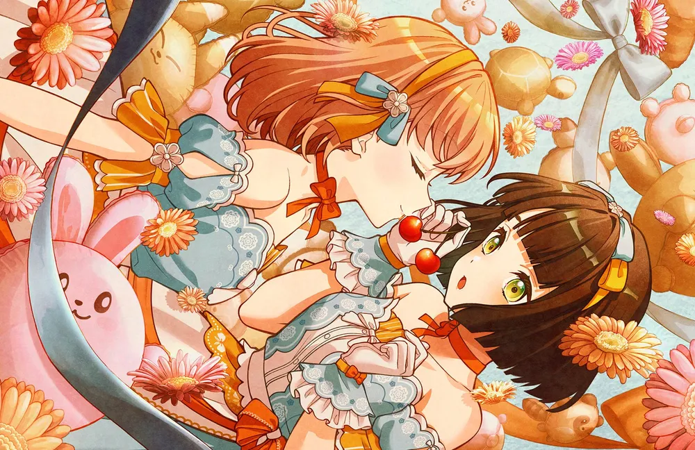
이미지 없음이키즈라이브! LOVELIVE! BLUEBIRD 코마가타 하나비: 두 명 모두 전통을 중시하는 집안의 딸이라는 공통점으로 엮인다. 긴코는 기모노 장인인 할머니의 영향으로 사복으로 기모노를 입으며, 하나비 역시 전통 의상의 매력을 알리기 위해 아이돌 활동을 시작했다.
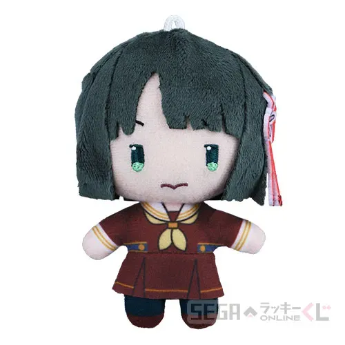
세가 누이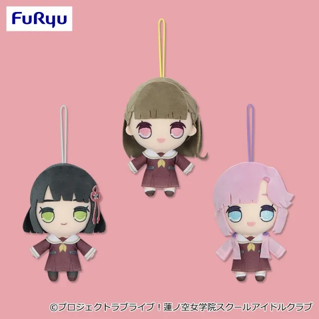
큐루마루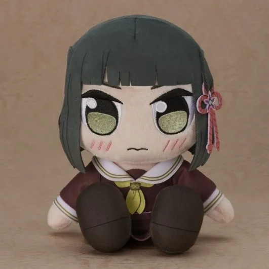
쿠리팡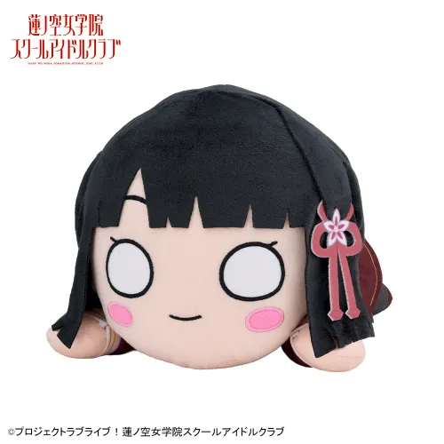
점보네소104기, 105기, 극장판 스탠딩 일러스트 및 아이콘 등이 존재한다.
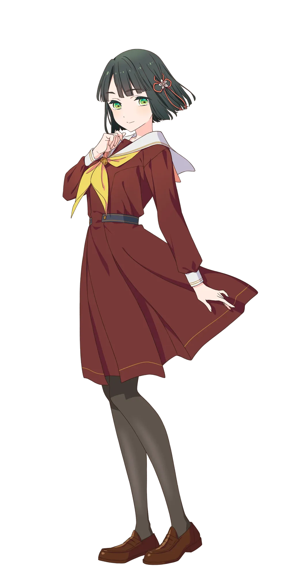
이미지 없음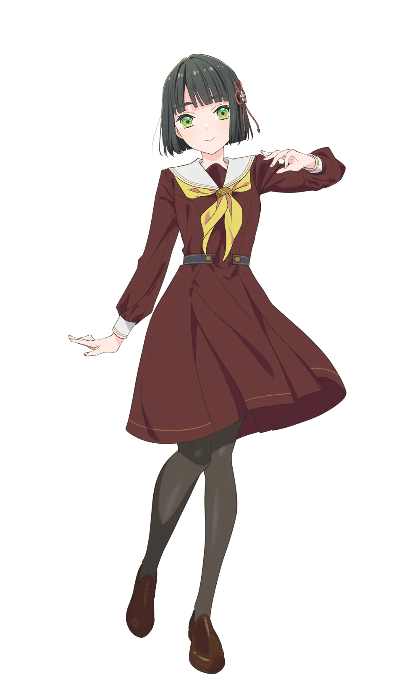
이미지 없음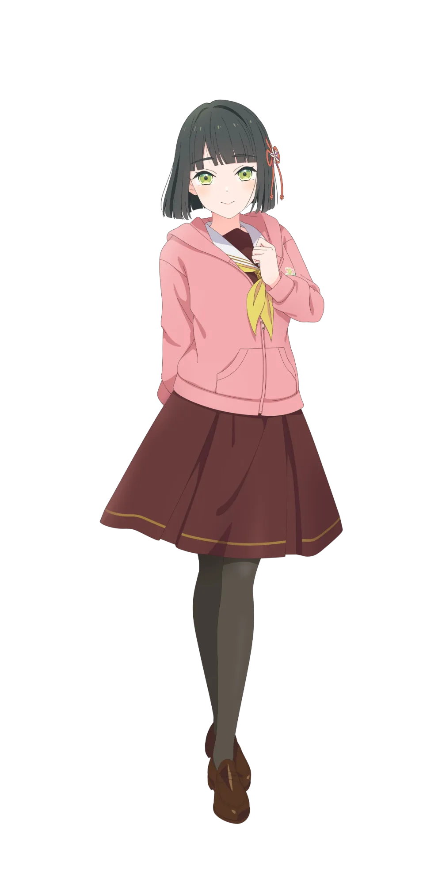
이미지 없음2024년, 2025년 생일 굿즈 및 생일 기념 카드 일러스트 발매.
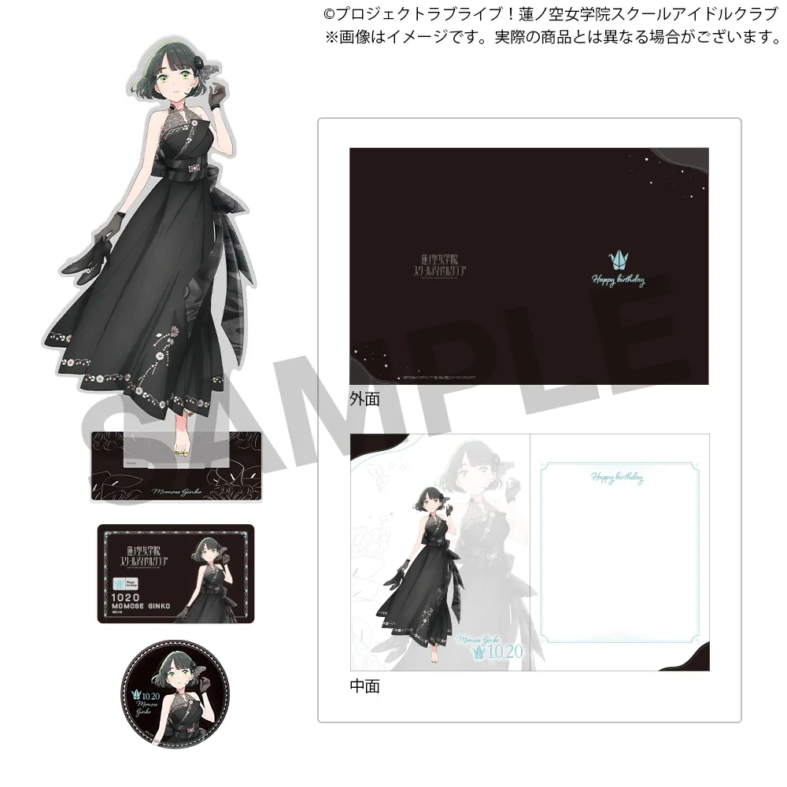
2024년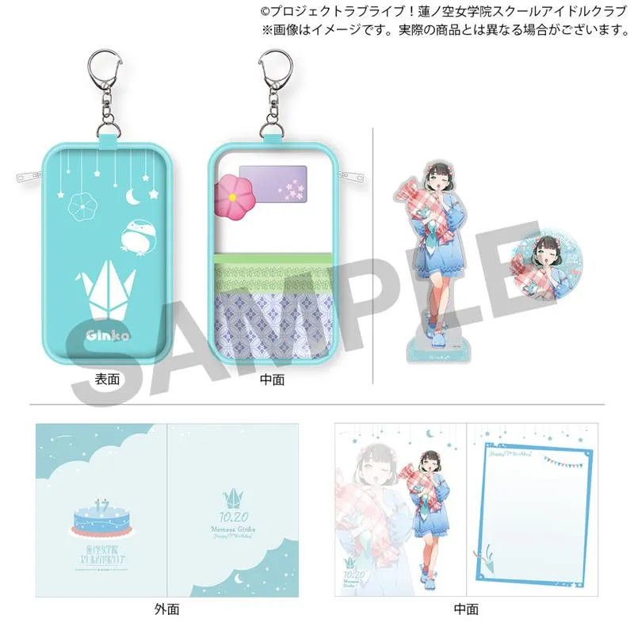
2024년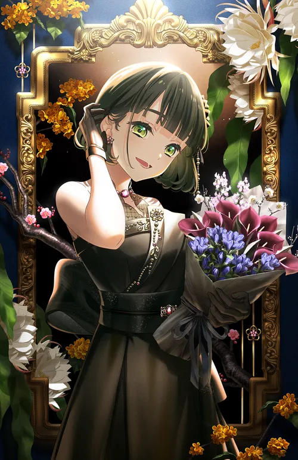
2025년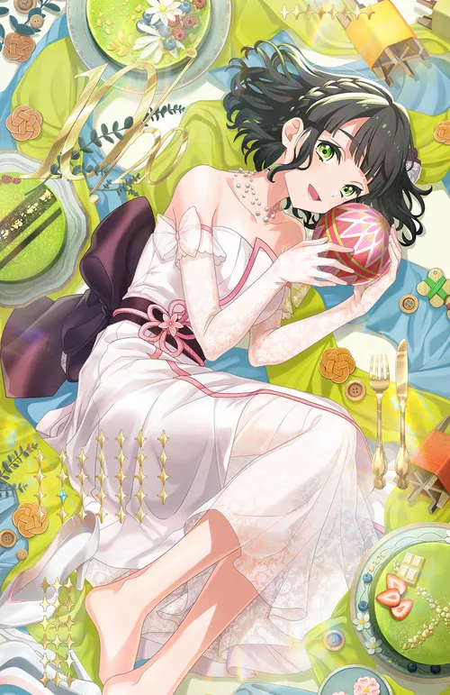
2025년